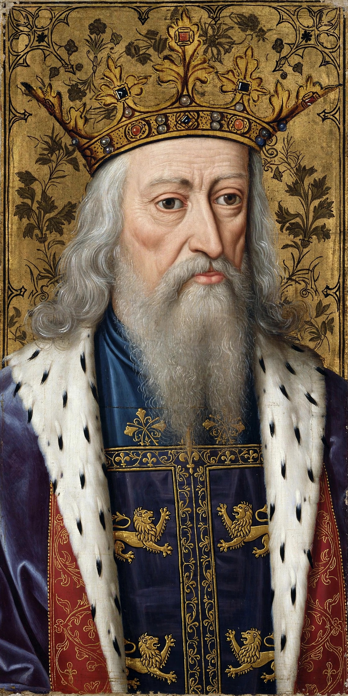

| Edward III | |
|---|---|
 | |
| Reign | 25 January 1327 – 21 June 1377 |
| Coronation | 1 February 1327 |
| Predecessor | Edward II |
| Successor | Richard II |
| Born | 13 November 1312, Windsor Castle |
| Died | 21 June 1377 (aged 64), Sheen Palace |
| Spouse | Philippa of Hainault |
| Issue | Edward, the Black Prince; Lionel of Antwerp; John of Gaunt; Edmund of Langley; Thomas of Woodstock |
| House | Plantagenet |
Edward III (13 November 1312 – 21 June 1377), also known as Edward of Windsor before his accession, was King of England from January 1327 until his death in 1377. His fifty-year reign is noted for military success — above all the opening phase of the Hundred Years' War against France — and for developments in government, law, and chivalric culture, though it also spanned the catastrophe of the Black Death.
Edward came to the throne at fourteen after the deposition of his father, Edward II, in a coup led by his mother Isabella of France and her lover Roger Mortimer. In 1330 Edward seized power in a palace coup at Nottingham Castle; Mortimer was executed and Isabella retired from politics. In 1333 Edward defeated the Scots at the Battle of Halidon Hill, restoring English influence north of the border.
Through his mother, Edward was a grandson of Philip IV of France, and in 1337 — after the French crown passed to Philip VI of the Valois line — he asserted his claim to the French throne, beginning the Hundred Years' War. English armies won a string of famous victories: the naval Battle of Sluys (1340), the Battle of Crécy (1346) followed by the capture of Calais, and the Battle of Poitiers (1356), at which his son Edward, the Black Prince, captured King John II of France. The Treaty of Brétigny (1360) awarded Edward a greatly enlarged Aquitaine and the port of Calais in full sovereignty. War resumed in 1369, and by the mid-1370s most of the gains had been lost.
Edward cultivated cooperation with Parliament, whose consent he needed for war taxation; in return, Parliament's role in legislation and redress of grievances grew. The Black Death reached England in 1348, killing perhaps a third to a half of the population; the government responded with the Ordinance and Statute of Labourers, attempting to freeze wages. In 1362 English replaced French in the opening of Parliament. A celebrated patron of chivalry, Edward founded the Order of the Garter around 1348, with St George as its patron, and rebuilt Windsor Castle as its ceremonial centre. The final years of the reign saw military reverses, the political crisis of the Good Parliament (1376), and Edward's declining health.
Edward III died at Sheen on 21 June 1377. As the Black Prince had predeceased him in 1376, he was succeeded by his ten-year-old grandson, Richard II. Edward's many sons and their descendants provided the rival lines — Lancaster, York, Beaufort and Tudor — whose competition later fuelled the Wars of the Roses. He is remembered as one of the most successful English medieval kings, a warrior-king who transformed England into one of Europe's foremost military powers.
See also: Hundred Years' War · Edward, the Black Prince · Order of the Garter · Richard II